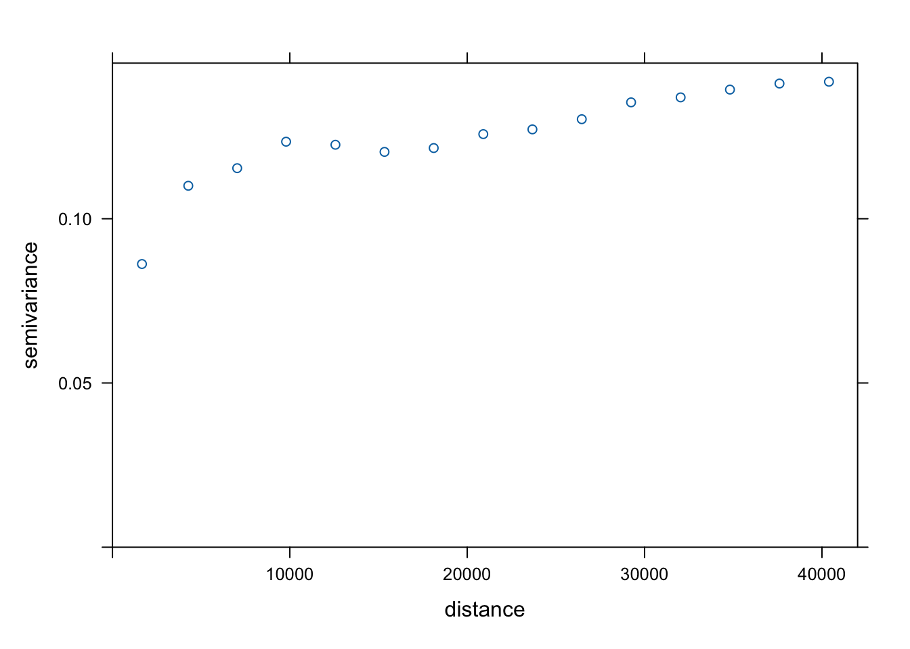

pacman::p_load(sp, sf, st, spdep, raster, spatstat, tmap, devtools,vtable, ggplot2, egg, corrplot, ggstats, ggstatsplot, GWmodel, tidyverse, gtsummary, olsrr, car, blorr,ISLR, klaR, rsample,kableExtra, performance)Explanatory Landslide Susceptibility Modelling
R
sf
gwmodel
Explanatory Landslide Susceptibility Modelling Using Statistical Modelling Techniques
Landslide susceptibility modelling is emerging field of research that aims to identify the contributing factors of landslides and predict areas that are most susceptible. These studies serve as a valuable decision-support tool, helping us identify the areas at highest risk and implement preventive measures accordingly. In this research project, we aims to demonstrate the potential contribution of spatial non-stationarity in landslide susceptibility modelling. Particuarly, two statistical model frameworks are employed to model explanatory landslide susceptibility.
Logistic Regression (
statspackage)Geographically Weighted Logistic Regression (
GWmodelpackage)
The modelling will start with the parametric tests and analyses associated with the fundamental concepts and theories of these frameworks. This is followed by model training, validation, and evaluation. Subsequently, measures of variable coefficients as well as target outcome estimates are extracted and interpolated to discuss the model results, culminating in the creation of the landslide susceptibility map.
1.0 Import Packages
Before we start the analysis, we will need to import necessary R packages first. In particular, we will import three packages that will allow us to fit two statistical models we mentioned above.
The package
statsallows fast implementation of Random Forests, particularly suited for high dimensional data. Particularly,glmfunction can be used to fit generalized linear models, specified by giving a symbolic description of the linear predictor and a description of the error distribution.The package
GWmodelfacilitates fitting geographically weighted regression models when data are not described well by some global model, but where there are spatial regions where a suitably localised calibration provides a better description.
2.0 Import Datasets
In this session, we will use two datasets.
The first dataset,
valtellina, is a geospatial dataset that delineates the boundary of our study area - Valtellina Valley. This data is presented in the ESRI shapefile format and is based on the Italy Geographic Coordinate System.The second dataset,
train_grids_v4is a comma-separated values (csv) dataset that includes the entire inventory landslide and non-landslide samples collected from multiple data sources. We will use it to sample data for model fitting, training and testing.
valtellina <- read_sf(dsn = "data/vector", layer = "valtellina")
train_grids_v4 <- read.csv("data/aspatial/train_grid_v4.csv")3.0 Data Wrangling
3.1 Checking Data Class
First, we need to check the class of our datasets to ensure they are suitable for spatial analysis in R.
class(valtellina)[1] "sf" "tbl_df" "tbl" "data.frame"class(train_grids_v4)[1] "data.frame"From the results, we find that valtellina is already an sf object, which is suitable for spatial analysis in R. However, we find that train_grids_v4 is a data.frame.
3.2 Transforming Data to Simple Feature Objects
To facilitate spatial data manipulation in R, we will convert it to a simple features (sf) object. The st_as_sf function from the sf package is used for this conversion. The X and Y columns in train_grids_v4 provide the XY-coordinates for each data observation.
train_grid_v4.sf <- st_as_sf(train_grids_v4,
coords = c("X", "Y"))To ensure accurate spatial analysis, it’s crucial that our spatial data is in the correct coordinate reference system (CRS). Different CRSs can lead to different results. Therefore, we will set the CRS of train_grid_v4.sf to WGS 84 / UTM zone 32N (EPSG code 32632), which is suitable for accurate distance and area calculations.
The code chunk below sets the CRS for train_grid_v4.sf
train_grid_v4.sf <- st_set_crs(train_grid_v4.sf, 32632) By setting the appropriate CRS, we ensure that our spatial data is in a projected system suitable for accurate distance and area calculations. This is a crucial step in preparing our data for further spatial analysis.
4.0 Exploratory Data Analysis (ESDA)
4.1 Summary Statistics
First, we calculate the summary statistics of the train_grids_v4 data frame using the st() function. This will provide us with a general understanding of the dataset’s characteristics.
st(train_grids_v4)| Variable | N | Mean | Std. Dev. | Min | Pctl. 25 | Pctl. 75 | Max |
|---|---|---|---|---|---|---|---|
| Train_ID | 50563 | 25282 | 14596 | 1 | 12642 | 37922 | 50563 |
| Grid_ID | 50563 | 7258576 | 4280699 | 154 | 3455206 | 11141722 | 14724829 |
| X | 50563 | 573312 | 27325 | 519097 | 550687 | 594547 | 624487 |
| Y | 50563 | 5129116 | 17040 | 5095541 | 5115266 | 5143076 | 5164991 |
| Landslide | 50563 | 0.83 | 0.38 | 0 | 1 | 1 | 1 |
| Elevation | 50563 | 1913 | 677 | 0 | 1509 | 2420 | 3924 |
| Slope_Angle | 50563 | 29 | 15 | 0 | 18 | 39 | 83 |
| Aspect_North | 50563 | 0.061 | 0.24 | 0 | 0 | 0 | 1 |
| Aspect_NorthEast | 50563 | 0.12 | 0.32 | 0 | 0 | 0 | 1 |
| Aspect_East | 50563 | 0.14 | 0.34 | 0 | 0 | 0 | 1 |
| Aspect_SouthEast | 50563 | 0.15 | 0.35 | 0 | 0 | 0 | 1 |
| Aspect_South | 50563 | 0.16 | 0.36 | 0 | 0 | 0 | 1 |
| Aspect_SouthWest | 50563 | 0.15 | 0.36 | 0 | 0 | 0 | 1 |
| Aspect_West | 50563 | 0.13 | 0.34 | 0 | 0 | 0 | 1 |
| Profile_Curvature | 50563 | -0.00043 | 0.0012 | -0.0066 | -0.0011 | 0.00022 | 0.0079 |
| Plan_Curvature | 50563 | -0.00019 | 0.0011 | -0.0056 | -0.00071 | 0.00032 | 0.0068 |
| Lithology_Metamorphic | 50563 | 0.42 | 0.49 | 0 | 0 | 1 | 1 |
| Lithology_Sedimentary | 50563 | 0.24 | 0.42 | 0 | 0 | 0 | 1 |
| Lithology_Plutonic | 50563 | 0.057 | 0.23 | 0 | 0 | 0 | 1 |
| Lithology_Unconsolidated | 50563 | 0.29 | 0.45 | 0 | 0 | 1 | 1 |
| Proximity_Settlement | 50563 | 904 | 764 | 0 | 328 | 1288 | 5600 |
| Proximity_Stream | 50563 | 12 | 12 | 0 | 3.1 | 17 | 97 |
| Proximity_Road | 50563 | 26 | 22 | 0 | 6.3 | 40 | 125 |
| Proximity_Fault | 50563 | 828 | 1032 | 0 | 199 | 1012 | 7746 |
| Landuse_Vegetation | 50563 | 0.51 | 0.5 | 0 | 0 | 1 | 1 |
| Precipitation | 50563 | 0.15 | 0.048 | 0 | 0.13 | 0.17 | 0.29 |
| TWI | 50563 | 7.5 | 2.3 | 3.7 | 6 | 8.3 | 23 |
| SPI | 50563 | 0.0065 | 0.029 | 0 | 0.00024 | 0.0032 | 1.4 |
| STI | 50563 | 7.7 | 27 | 0 | 0 | 5.8 | 877 |
4.2 Correlation Matrix
Before building a logistic regression model, it’s important to ensure that the independent variables used are not highly correlated with each other. If highly correlated independent variables are used in building a regression model, the quality of the model will be compromised.
Pearson’s correlation is a commonly used correlation coefficient to calculate and visualize the relationships between the independent variables. It measures the linear relationship between the two variables and takes values between -1 and 1; -1 means a total negative linear correlation, 0 means no correlation, and 1 means a total positive correlation. Pearson’s correlation can be calculated using the formula:
\[ r = \frac{\sum{(x_i - \bar{x})(y_i - \bar{y})}}{\sqrt{\sum{(x_i - \bar{x})^2(y_i - \bar{y})^2}}} \]
We use ggcorrmat to create the correlation matrix. This function from the ggstatsplot package allows us to visualize the correlation matrix in a more aesthetically pleasing and informative manner.
set.seed(123)
## producing the correlation matrix
ggcorrmat(
data = train_grids_v4[, 6:29],
matrix.type = "upper",
type = "parametric",
tr = 0.2,
partial = FALSE,
k = 2L,
sig.level = 0.05,
conf.level = 0.95,
bf.prior = 0.707,
ggcorrplot.args = list(
tl.cex = 10,
pch.cex = 5,
lab_size = 3
)) + ## modification outside `{ggstatsplot}` using `{ggplot2}` functions
ggplot2::theme(
axis.text.x = ggplot2::element_text(
margin = ggplot2::margin(t = 0.15, r = 0.15, b = 0.15, l = 0.15, unit = "cm")
)
)
The use of color intensity and symbols (X for non-significant correlations) makes it easy to identify strong, weak, or non-existent correlations quickly. The colors range from green (positive correlation) through white (no correlation) to orange (negative correlation). An “X” mark is placed on cells where the correlation is not statistically significant at p < 0.05 after adjustment for multiple comparisons using Holm’s method. This helps in distinguishing meaningful relationships from random associations.
Observation
The maximum correlation coefficient area is observed at 0.55 for pair between elevation and distance to settlement and at 0.49 for pair between elevation and distance to road as well as SPI and STI. Modern civilisation is built on lower elevations and accounts for the moderate coefficients. Other factors exhibit a range of low to moderate correlations. Overall, no factors among those selected for this study exhibit high positive correlation.
5.0 Logistic Regression
Logistic Regression (LR) is a multivariate statistical method that has proven to be reliable and is frequently used for evaluating landslide susceptibility. It is particularly useful in this context due to the binary nature of the response variable, which represents either the presence (value of 1) or absence (value of 0) of a landslide. Moreover, the predictor variables (landslide susceptibility factors) can be either discrete or continuous and are not required to satisfy the normal distribution. LR fits a sigmoid function by taking a linear regression between a binary dependent variable and continuous or categorial independent variables
The LR model can be formulated in two part. The first equation is for the probability of a binary outcome given input features, formulated as follow:
\[ p(y = 1|x) = \frac{e^{\beta_0+\beta_1x_1+...+\beta_kx_k}}{1 + e^{\beta_0+\beta_1x_1+...+\beta_kx_k}} \]
where \(p(y=1∣x)\) is the probability of the outcome being 1 given the input features, e is the base of the natural logarithm. \(β_0,β_1,...,β_k\) are the coefficients of the logistic regression model. \(x_1,...,x_k\) are the input features.
The second equation is the log-odds or logit transformation of the probability, simplifying the expression to a linear combination of features and coefficients, formulated as follows:
\[ \log\left(\frac{p}{1 - p}\right) = \beta_0 + \beta_1x_1 + ... + \beta_kx_k \]
where \(\log\left(\frac{p}{1 - p}\right)\) is the log-odds or logit of the probability.
LR follows from the principle of maximum likelihood estimation, which maximizes the probability of getting the observed results, based on the fitted regression coefficients.
5.1 Fitting Logistic Regression Model 1
The glm function fits generalized linear models, a class of models that includes logistic regression. The syntax of the glm function is similar to that of lm, except that we must pass the argument family = binomial in order to tell R to run a logistic regression rather than some other type of generalized linear model.
Under general logistic regression, all variables are considered first. We use the glm function to fit a basic LR model (LR 1) with all the variables.
set.seed(1234)
landslide.lr <- glm(Landslide ~ Elevation + Slope_Angle + Aspect_North + Aspect_NorthEast + Aspect_East+Aspect_SouthEast+Aspect_South + Aspect_SouthWest +Aspect_West + Profile_Curvature +Plan_Curvature + Lithology_Metamorphic+Lithology_Sedimentary + Lithology_Plutonic+Lithology_Unconsolidated + Proximity_Settlement+Proximity_Stream+Proximity_Road+Proximity_Fault+Landuse_Vegetation+Precipitation+TWI+SPI+STI, family = "binomial", data = train_grids_v4)5.1.1 Printing Model Summary
We can print the summary of the model to understand the coefficients, standard errors, and significance levels of the variables. The summary function from the base package in R is used for this purpose.
sum_lr <- summary(landslide.lr)
sum_lr
Call:
glm(formula = Landslide ~ Elevation + Slope_Angle + Aspect_North +
Aspect_NorthEast + Aspect_East + Aspect_SouthEast + Aspect_South +
Aspect_SouthWest + Aspect_West + Profile_Curvature + Plan_Curvature +
Lithology_Metamorphic + Lithology_Sedimentary + Lithology_Plutonic +
Lithology_Unconsolidated + Proximity_Settlement + Proximity_Stream +
Proximity_Road + Proximity_Fault + Landuse_Vegetation + Precipitation +
TWI + SPI + STI, family = "binomial", data = train_grids_v4)
Coefficients:
Estimate Std. Error z value Pr(>|z|)
(Intercept) -2.243e+00 1.893e-01 -11.847 < 2e-16 ***
Elevation 5.790e-05 3.517e-05 1.646 0.099718 .
Slope_Angle 1.706e-01 1.954e-03 87.343 < 2e-16 ***
Aspect_North -3.510e-02 8.618e-02 -0.407 0.683821
Aspect_NorthEast -2.225e-01 7.213e-02 -3.084 0.002041 **
Aspect_East -1.617e-01 7.128e-02 -2.268 0.023321 *
Aspect_SouthEast -2.401e-01 6.917e-02 -3.472 0.000517 ***
Aspect_South -1.812e-01 6.829e-02 -2.653 0.007975 **
Aspect_SouthWest -4.600e-02 6.949e-02 -0.662 0.508031
Aspect_West -4.762e-02 7.108e-02 -0.670 0.502869
Profile_Curvature -6.228e+02 1.777e+01 -35.052 < 2e-16 ***
Plan_Curvature -5.890e+02 2.009e+01 -29.320 < 2e-16 ***
Lithology_Metamorphic 1.109e+00 9.629e-02 11.522 < 2e-16 ***
Lithology_Sedimentary 1.577e+00 1.005e-01 15.687 < 2e-16 ***
Lithology_Plutonic -3.030e-02 8.847e-02 -0.343 0.731946
Lithology_Unconsolidated 1.499e+00 9.792e-02 15.312 < 2e-16 ***
Proximity_Settlement 4.360e-05 2.970e-05 1.468 0.142100
Proximity_Stream -6.250e-03 1.593e-03 -3.924 8.72e-05 ***
Proximity_Road -2.343e-03 1.026e-03 -2.283 0.022445 *
Proximity_Fault -1.315e-04 1.615e-05 -8.146 3.77e-16 ***
Landuse_Vegetation 6.692e-01 4.060e-02 16.483 < 2e-16 ***
Precipitation -3.469e+00 4.229e-01 -8.202 2.37e-16 ***
TWI -1.067e-01 9.637e-03 -11.067 < 2e-16 ***
SPI 1.191e+00 7.010e-01 1.699 0.089396 .
STI -5.287e-04 7.677e-04 -0.689 0.491022
---
Signif. codes: 0 '***' 0.001 '**' 0.01 '*' 0.05 '.' 0.1 ' ' 1
(Dispersion parameter for binomial family taken to be 1)
Null deviance: 46691 on 50562 degrees of freedom
Residual deviance: 22929 on 50538 degrees of freedom
AIC: 22979
Number of Fisher Scoring iterations: 75.1.2 Calculating Percentage of Deviance Explained
In Generalized Linear Models (GLMs), deviance is a measure of goodness of fit. Specifically, deviance is a measure of the discrepancy between the data and the model’s predictions. The null deviance shows how well the response variable is predicted by a model that includes only the intercept (no predictors). The model’s deviance shows how well the response variable is predicted by the model.
In mathematical terms, the percentage of deviance explained is calculated as:
\[ \text{Percentage of Deviance Explained} = \left(1 - \frac{D_{\text{model}}}{D_{\text{null}}} \right) \times 100 \]
Below is the code chunk used to calculate the percentage of deviance using the following steps
Calculate the total deviance, which is the null deviance.
Subtract the model’s deviance from the null deviance. This gives the amount of deviance explained by the model.
Divide the explained deviance by the null deviance and multiply by 100 to get the percentage.
pd <- 100*with(summary(landslide.lr), 1 - deviance/null.deviance)
pd[1] 50.891145.1.2 Computing Confidence Intervals
We calculate the confidence intervals for the coefficients of the variables in our model. The confint function from the stats package in R is used for this purpose.
confint(landslide.lr)Waiting for profiling to be done... 2.5 % 97.5 %
(Intercept) -2.614798e+00 -1.872528e+00
Elevation -1.100535e-05 1.268617e-04
Slope_Angle 1.668213e-01 1.744792e-01
Aspect_North -2.036349e-01 1.342130e-01
Aspect_NorthEast -3.639457e-01 -8.116805e-02
Aspect_East -3.014909e-01 -2.205432e-02
Aspect_SouthEast -3.758587e-01 -1.047178e-01
Aspect_South -3.152073e-01 -4.749895e-02
Aspect_SouthWest -1.823284e-01 9.008984e-02
Aspect_West -1.870295e-01 9.162142e-02
Profile_Curvature -6.577535e+02 -5.880979e+02
Plan_Curvature -6.284441e+02 -5.496984e+02
Lithology_Metamorphic 9.214128e-01 1.298931e+00
Lithology_Sedimentary 1.380869e+00 1.775060e+00
Lithology_Plutonic -2.039839e-01 1.428812e-01
Lithology_Unconsolidated 1.308214e+00 1.692127e+00
Proximity_Settlement -1.450154e-05 1.019138e-04
Proximity_Stream -9.364838e-03 -3.120470e-03
Proximity_Road -4.349682e-03 -3.261896e-04
Proximity_Fault -1.631453e-04 -9.983405e-05
Landuse_Vegetation 5.897524e-01 7.489057e-01
Precipitation -4.298446e+00 -2.640479e+00
TWI -1.256194e-01 -8.783854e-02
SPI -1.375593e-01 2.613875e+00
STI -2.021054e-03 9.886275e-045.1.3 Validating Logistic Regression Model 1
In this step, we validate the logistic regression model that we built in the previous step. Validation is a crucial part of the modeling process because it helps us understand how well our model performs on unseen data.
We use the blr_confusion_matrix function from the blr package in R to create a confusion matrix for our model. A confusion matrix is a table that is often used to describe the performance of a classification model on a set of data for which the true values are known.
The cutoff argument in the blr_confusion_matrix function is used to decide the threshold for classifying a probability into a binary outcome. In this case, we set the cutoff to 0.5, which means that if the predicted probability is greater than or equal to 0.5, the outcome is classified as 1 (landslide), otherwise it is classified as 0 (no landslide).
cm <- blr_confusion_matrix(landslide.lr, cutoff = 0.5)
cmConfusion Matrix and Statistics
Reference
Prediction 0 1
0 6548 1292
1 2235 40488
Accuracy : 0.9302
No Information Rate : 0.1737
Kappa : 0.7462
McNemars's Test P-Value : 0.0000
Sensitivity : 0.9691
Specificity : 0.7455
Pos Pred Value : 0.9477
Neg Pred Value : 0.8352
Prevalence : 0.8263
Detection Rate : 0.8007
Detection Prevalence : 0.8449
Balanced Accuracy : 0.8573
Precision : 0.9477
Recall : 0.9691
'Positive' Class : 1The output cm is the confusion matrix for our logistic regression model. It shows the number of true positives, true negatives, false positives, and false negatives. This information can be used to calculate various performance metrics such as accuracy, precision, recall, and F1 score.
5.2 Curse of Multicollinearity
Regression models are sensitive to multicollinearity. Multicollinearity arises when two or more explanatory variables in a regression model display moderate or high correlation among each other. The presence of multicollinearity makes it difficult to assess the individual importance and significance of a predictor. Subsequently, variance inflation factor (VIF) and tolerance (TOL) values are calculated to further evaluate landslide variables. VIF is a statistical measure used in regression analysis to observe the increase in variance of the regression coefficient estimates due to multicollinearity. Mathematically, VIF can be calculated using the formula:
\[ VIF = \frac{1}{1 - R_j^2} = \frac{1}{TOL} \]
5.2.1 Calculate Variance Inflation Factor (VIF)
We use the multicollinearity function from the performance package to calculate the VIF.
vif <- multicollinearity(landslide.lr)
vif# Check for Multicollinearity
Low Correlation
Term VIF VIF 95% CI Increased SE Tolerance Tolerance 95% CI
Elevation 2.36 [2.33, 2.40] 1.54 0.42 [0.42, 0.43]
Slope_Angle 1.69 [1.67, 1.71] 1.30 0.59 [0.58, 0.60]
Aspect_North 1.50 [1.48, 1.52] 1.22 0.67 [0.66, 0.68]
Aspect_NorthEast 1.91 [1.88, 1.93] 1.38 0.52 [0.52, 0.53]
Aspect_East 1.95 [1.93, 1.98] 1.40 0.51 [0.51, 0.52]
Aspect_SouthEast 2.09 [2.07, 2.12] 1.45 0.48 [0.47, 0.48]
Aspect_South 2.15 [2.12, 2.17] 1.46 0.47 [0.46, 0.47]
Aspect_SouthWest 2.03 [2.00, 2.05] 1.42 0.49 [0.49, 0.50]
Aspect_West 1.93 [1.90, 1.95] 1.39 0.52 [0.51, 0.53]
Profile_Curvature 1.42 [1.41, 1.44] 1.19 0.70 [0.70, 0.71]
Plan_Curvature 1.49 [1.47, 1.51] 1.22 0.67 [0.66, 0.68]
Lithology_Plutonic 1.91 [1.89, 1.94] 1.38 0.52 [0.52, 0.53]
Proximity_Settlement 1.79 [1.77, 1.81] 1.34 0.56 [0.55, 0.57]
Proximity_Stream 1.29 [1.28, 1.31] 1.14 0.77 [0.76, 0.78]
Proximity_Road 1.82 [1.80, 1.84] 1.35 0.55 [0.54, 0.56]
Proximity_Fault 1.06 [1.05, 1.07] 1.03 0.94 [0.94, 0.95]
Landuse_Vegetation 1.39 [1.37, 1.40] 1.18 0.72 [0.71, 0.73]
Precipitation 1.30 [1.28, 1.31] 1.14 0.77 [0.76, 0.78]
TWI 2.20 [2.17, 2.23] 1.48 0.45 [0.45, 0.46]
SPI 1.31 [1.29, 1.32] 1.14 0.76 [0.76, 0.77]
STI 1.31 [1.29, 1.32] 1.14 0.76 [0.76, 0.77]
Moderate Correlation
Term VIF VIF 95% CI Increased SE Tolerance
Lithology_Metamorphic 7.44 [7.32, 7.57] 2.73 0.13
Lithology_Sedimentary 5.13 [5.05, 5.21] 2.27 0.19
Lithology_Unconsolidated 7.69 [7.56, 7.81] 2.77 0.13
Tolerance 95% CI
[0.13, 0.14]
[0.19, 0.20]
[0.13, 0.13]plot(vif)Variable `Component` is not in your data frame :/There are currently no established criteria for identifying the extent of variance inflation factors that result in poorly estimated coefficients. A frequently used benchmark for VIF in numerous regression studies is VIF ≥ 5. Values ≥ 5 indicate significant multicollinearity and may necessitate further investigation or actions.
Observation
Results of multicollinearity test between explanatory landslide factors are presented in Table 2. Three lithological categories – metamorphic, sedimentary and unconsolidated shows high VIF values of 7.85, 5.98 and 9.42 respectively, indicating moderate multicollinearity.
5.2.2 Remove Variable with High Multicollinearity
To avoid potential issues in subsequent modelling results, the variable with the highest VIF value, lithology (unconsolidated) is removed from the dataset.
train_grids_v4 <- subset(train_grids_v4, select = -Lithology_Unconsolidated)We then fit the logistic regression model again without the Lithology_Unconsolidated variable.
landslide.lr <- glm(Landslide ~ Elevation + Slope_Angle + Aspect_North + Aspect_NorthEast + Aspect_East+Aspect_SouthEast+Aspect_South + Aspect_SouthWest +Aspect_West + Profile_Curvature +Plan_Curvature + Lithology_Metamorphic+Lithology_Sedimentary + Lithology_Plutonic + Proximity_Settlement+Proximity_Stream+Proximity_Road+Proximity_Fault+Landuse_Vegetation+Precipitation+TWI+SPI+STI, family = "binomial", data = train_grids_v4)We can plot the VIF values again to check if the multicollinearity problem has been resolved.
plot(multicollinearity(landslide.lr))Variable `Component` is not in your data frame :/
Observation
All the VIF values after the removal are less than 2.27 and TOL values are all above 0.44, indicating that there is no more collinearity problem observed among factors.
5.3 Stepwise Selection
In the initial model, all the independent variables are included. However, including too many variables in a model can lead to overfitting. Overfitting is a modeling error that occurs when a function is too closely aligned to a limited set of data points. An overfitted model may result in an algorithm that is excessively complex, such as one involving a function that has too many parameters relative to the number of observations. A model that has been overfitted will generally have poor predictive performance, as it can exaggerate minor fluctuations in the data.
The goal of this step is to create a more parsimonious model, which means we aim to include a limited number of independent variables (between 5 and 15) that are all statistically significant, without sacrificing too much on the model’s performance.
To achieve this, we employ a stepwise variable selection procedure. Stepwise selection is a method of fitting regression models in which the choice of predictive variables is carried out by an automatic procedure. In each step, a variable is considered for addition to or subtraction from the set of explanatory variables based on some prespecified criterion.
We use the blr_step_aic_both() function from the blr package in R for this purpose. This function performs both forward and backward stepwise variable selection based on the Akaike Information Criterion (AIC). The AIC is a measure of the relative quality of a statistical model for a given set of data. It provides a means for model selection by comparing different models and choosing the one that minimizes the information loss.
stepwise_1 <- blr_step_aic_both(landslide.lr)We then load the results of the stepwise selection process to see which variables were selected.
stepwise1
Stepwise Summary
------------------------------------------------------------------------
Variable Method AIC BIC Deviance
------------------------------------------------------------------------
Slope_Angle addition 27757.416 27775.078 27753.416
Profile_Curvature addition 25065.141 25091.634 25059.141
Plan_Curvature addition 24303.970 24339.294 24295.970
Landuse_Vegetation addition 23891.260 23935.415 23881.260
Lithology_Plutonic addition 23677.727 23730.713 23665.727
Precipitation addition 23539.203 23601.020 23525.203
Proximity_Fault addition 23430.433 23501.081 23414.433
TWI addition 23337.014 23416.493 23319.014
Lithology_Sedimentary addition 23278.363 23366.672 23258.363
Lithology_Metamorphic addition 23256.786 23353.927 23234.786
Proximity_Stream addition 23245.816 23351.788 23221.816
Aspect_SouthEast addition 23237.365 23352.167 23211.365
Proximity_Road addition 23231.794 23355.428 23203.794
Aspect_South addition 23226.738 23359.203 23196.738
Aspect_NorthEast addition 23220.038 23361.333 23188.038
Aspect_East addition 23216.825 23366.952 23182.825
Proximity_Settlement addition 23214.504 23373.462 23178.504
SPI addition 23213.794 23381.582 23175.794
------------------------------------------------------------------------
Observation
17 explanatory variables have been selected in this stepwise selection process. This is a significant reduction from the initial model, which should help to mitigate the risk of overfitting.
We can also plot the AIC values for the different models considered during the stepwise selection process. This helps us visualize how the AIC changes as different variables are added or removed from the model.
plot(stepwise1)
Observation
In our first stepwise selection, Slope_Angle has the highest AIC value followed by Profile_Curvature. This suggests that these variables contribute the most information to the model, and removing them would result in the greatest loss of information.
5.4 Fitting Logistic Regression Model 2
In this step, we recalibrate the first model we fitted landslide.lr by updating the logistic regression with the selected variables from stepwise selection.
set.seed(1234)
landslide.lr2 <- glm(Landslide ~ Slope_Angle + Profile_Curvature +
Plan_Curvature + Landuse_Vegetation +
Lithology_Plutonic + Precipitation +
Proximity_Fault + TWI + Lithology_Sedimentary +
Lithology_Metamorphic + Proximity_Stream +
Aspect_SouthEast + Proximity_Road + Aspect_South +
Aspect_NorthEast + Aspect_East +
Proximity_Settlement + SPI , family = "binomial",
data = train_grids_v4)5.4.1 Printing Model Summary
We can print the summary of the LR Model 2 to understand the coefficients, standard errors, and significance levels of the variables.
sum_lr2 <- summary(landslide.lr2)
sum_lr2
Call:
glm(formula = Landslide ~ Slope_Angle + Profile_Curvature + Plan_Curvature +
Landuse_Vegetation + Lithology_Plutonic + Precipitation +
Proximity_Fault + TWI + Lithology_Sedimentary + Lithology_Metamorphic +
Proximity_Stream + Aspect_SouthEast + Proximity_Road + Aspect_South +
Aspect_NorthEast + Aspect_East + Proximity_Settlement + SPI,
family = "binomial", data = train_grids_v4)
Coefficients:
Estimate Std. Error z value Pr(>|z|)
(Intercept) -7.474e-01 1.298e-01 -5.760 8.41e-09 ***
Slope_Angle 1.677e-01 1.926e-03 87.068 < 2e-16 ***
Profile_Curvature -6.246e+02 1.758e+01 -35.525 < 2e-16 ***
Plan_Curvature -5.873e+02 1.991e+01 -29.502 < 2e-16 ***
Landuse_Vegetation 6.894e-01 3.922e-02 17.576 < 2e-16 ***
Lithology_Plutonic -9.078e-01 7.297e-02 -12.440 < 2e-16 ***
Precipitation -3.645e+00 4.056e-01 -8.987 < 2e-16 ***
Proximity_Fault -1.499e-04 1.588e-05 -9.439 < 2e-16 ***
TWI -1.022e-01 9.412e-03 -10.862 < 2e-16 ***
Lithology_Sedimentary 2.519e-01 4.969e-02 5.069 3.99e-07 ***
Lithology_Metamorphic -2.087e-01 4.129e-02 -5.053 4.35e-07 ***
Proximity_Stream -6.511e-03 1.576e-03 -4.130 3.63e-05 ***
Aspect_SouthEast -2.323e-01 5.103e-02 -4.553 5.29e-06 ***
Proximity_Road -3.106e-03 9.311e-04 -3.335 0.000852 ***
Aspect_South -1.801e-01 4.996e-02 -3.604 0.000314 ***
Aspect_NorthEast -1.885e-01 5.546e-02 -3.399 0.000676 ***
Aspect_East -1.245e-01 5.412e-02 -2.301 0.021413 *
Proximity_Settlement 6.046e-05 2.895e-05 2.088 0.036780 *
SPI 9.713e-01 6.048e-01 1.606 0.108268
---
Signif. codes: 0 '***' 0.001 '**' 0.01 '*' 0.05 '.' 0.1 ' ' 1
(Dispersion parameter for binomial family taken to be 1)
Null deviance: 46691 on 50562 degrees of freedom
Residual deviance: 23176 on 50544 degrees of freedom
AIC: 23214
Number of Fisher Scoring iterations: 75.4.2 Calculating Percentage of Deviance Explained
Next, we calculate the percentage of deviance to understand how well LR Model 2 fits the data.
pd2 <- 100*with(summary(landslide.lr2), 1 - deviance/null.deviance)
pd2[1] 50.363475.4.3 Computing Confidence Intervals
We calculate the confidence intervals for the coefficients of the variables in LR Model 2.
confint(landslide.lr2)Waiting for profiling to be done... 2.5 % 97.5 %
(Intercept) -1.001625e+00 -4.929632e-01
Slope_Angle 1.639444e-01 1.714946e-01
Profile_Curvature -6.591626e+02 -5.902387e+02
Plan_Curvature -6.264255e+02 -5.483871e+02
Landuse_Vegetation 6.126197e-01 7.663724e-01
Lithology_Plutonic -1.050818e+00 -7.647598e-01
Precipitation -4.441027e+00 -2.850854e+00
Proximity_Fault -1.809778e-04 -1.187190e-04
TWI -1.207567e-01 -8.385932e-02
Lithology_Sedimentary 1.546190e-01 3.494003e-01
Lithology_Metamorphic -2.896727e-01 -1.277921e-01
Proximity_Stream -9.594447e-03 -3.414206e-03
Aspect_SouthEast -3.322339e-01 -1.321840e-01
Proximity_Road -4.927678e-03 -1.277477e-03
Aspect_South -2.778823e-01 -8.201456e-02
Aspect_NorthEast -2.970017e-01 -7.957527e-02
Aspect_East -2.303521e-01 -1.819932e-02
Proximity_Settlement 3.799190e-06 1.173025e-04
SPI -1.796589e-01 2.193795e+00
Observation
LR Model 2 is still overfitting and AIC of 23157 is very high.
5.4.4 Validating Logistic Regression Model 2
Agian, we use the blr_confusion_matrix function from the blr package in R to create a confusion matrix for LR Model 2.
cm2 <- blr_confusion_matrix(landslide.lr2, cutoff = 0.5)
cm2Confusion Matrix and Statistics
Reference
Prediction 0 1
0 6431 1254
1 2352 40526
Accuracy : 0.9287
No Information Rate : 0.1737
Kappa : 0.7387
McNemars's Test P-Value : 0.0000
Sensitivity : 0.9700
Specificity : 0.7322
Pos Pred Value : 0.9451
Neg Pred Value : 0.8368
Prevalence : 0.8263
Detection Rate : 0.8015
Detection Prevalence : 0.8480
Balanced Accuracy : 0.8511
Precision : 0.9451
Recall : 0.9700
'Positive' Class : 15.5 Comparing LR Model 1 & 2
The two models thus far yield similar results with small changes in accuracy, sensitivity and specificity despite a reduced number of variables from the first to the second model. We create a comparison table using the data.frame function from the base package in R to compare the performance metrics of the two models.
The metrics we’ve chosen to include in this comparison table are:
Accuracy: This measures the proportion of total predictions that are correct.
AIC (Akaike Information Criterion): This is a measure of the relative quality of a statistical model for a given set of data. Lower values indicate better-fitting models.
Sensitivity: This is the true positive rate, indicating the model’s ability to correctly predict positive outcomes.
Specificity: This is the true negative rate, reflecting the model’s ability to correctly predict negative outcomes.
Percentage Deviance Explained: This is a measure of the proportion of the total variability in the response variable that is accounted for by the predictors in the model.
| Information | Model1 | Model2 |
|---|---|---|
| Sample Size | 50563.0000 | 50563.0000 |
| Non-Landslide | 8783.0000 | 8783.0000 |
| Landslide | 41780.0000 | 41780.0000 |
| Explanatory Variable | 24.0000 | 17.0000 |
| Accuracy | 0.9302 | 0.9287 |
| AIC | 22979.4204 | 23213.7938 |
| Sensitivity | 0.9691 | 0.9700 |
| Specificity | 0.7455 | 0.7322 |
| Percentage Deviant | 50.8911 | 50.3635 |
This comparison table provides a side-by-side comparison of the two models, making it easier to see how the performance metrics have changed from the first model to the second model.
5.6 Weight of Evidence & Information Value
Weight of Evidence (WoE) is a variable transformation technique meant for independent variables according to Information Theory. WoE measures how good each grouped attribute or bin of a feature can predict the target variable.
WoE is formulated as:
\[ W~i^+ = ln \frac{P\{E~i/I\}}{P\{E~i/\overline{I}\}} \]
\[ W~i^- = ln \frac{P\{\overline{E}~i/I\}}{P\{\overline{E}~-i/\overline{I}\}} \]
\[ W~i = W~i^+ + W~i^- \]
Information value (IV) explains the predictive power of the entirety of the feature.
\[ IV = \sum_{i=1}^{n} (W_i \times (\%I - \%II)) \]
To calculate the IV of all independent variables in our dataset, we use the create_infotables() function from the Information package.
library("Information")
IV <- create_infotables(data=train_grids_v4[, 5:28],
valid=train_grids_v4[, 5:28],
y="Landslide")
kable(IV$Summary[,1:2], row.names=FALSE)| Variable | IV |
|---|---|
| Slope_Angle | 5.3574828 |
| TWI | 0.5119619 |
| Elevation | 0.3270770 |
| Proximity_Settlement | 0.2073722 |
| Proximity_Road | 0.2060752 |
| Profile_Curvature | 0.1481448 |
| Plan_Curvature | 0.1469663 |
| Precipitation | 0.1097135 |
| Proximity_Fault | 0.0931591 |
| Lithology_Sedimentary | 0.0770191 |
| Landuse_Vegetation | 0.0758787 |
| Proximity_Stream | 0.0606072 |
| Lithology_Metamorphic | 0.0243440 |
| Lithology_Plutonic | 0.0184281 |
| Aspect_East | 0.0028829 |
| Aspect_SouthEast | 0.0025985 |
| Aspect_South | 0.0020174 |
| Aspect_North | 0.0019081 |
| Aspect_West | 0.0011630 |
| STI | 0.0008136 |
| SPI | 0.0007769 |
| Aspect_SouthWest | 0.0000422 |
| Aspect_NorthEast | 0.0000023 |
Observation
Our analysis reveals that the Slope_Angle variable has the highest predictive power among all variables. This suggests that Slope_Angle may be overly dominant in predicting landslides, as indicated by its unusually high IV value. Further investigation is needed to understand why Slope_Angle has such a significant predictive power.
5.7 Stratified Slope Sampling
Our data points are located in various places with varying slope angles. Since our initial IV analysis flags out the over-dominance of Slope_Angle over our model results, we first visualize the distribution of slope angles using a histogram. This will help us detect any unbalanced or irregular distribution patterns that could bias our model.
5.7.1 Plotting Distribution of Slope Angles in Landslide and Non-Landslide Samples
We start by plotting the distribution of Slope_Angle in landslide samples.
ls_data <- train_grids_v4[train_grids_v4$Landslide==1,]
ggplot(data=ls_data, aes(x= `Slope_Angle`)) +
geom_histogram(bins=100, color="black", fill="#e9531e") +
labs(title="Distribution of slope values in landslide samples") +
geom_vline(xintercept = 20, color = "red")
Next, we plot the distribution of Slope_Angle in non-landslide samples.
non_ls_data <- train_grids_v4[train_grids_v4$Landslide==0,]
ggplot(data=non_ls_data, aes(x= `Slope_Angle`)) +
geom_histogram(bins=100, color="black", fill="#e9531e") +
labs(title="Distribution of slope values in non-landslide samples") +
geom_vline(xintercept = 20, color = "red")Observation
The majority of landslide samples have slope angles larger than 20°. In contrast, the majority of non-landslide samples have slope angles less than 20°. As such, the current model predicts any instances with a slope angle greater than 20° to be a landslide. This observation suggests that the Slope_Angle variable might be a strong predictor of landslides.
5.7.2 Implementing Stratified Slope Sampling
To address the data bias with the evidence of quasi-separation, we use a 20° cut-off based on the observation above. Quasi-separation is a situation in logistic regression where the outcome variable separates a predictor variable completely, leading to overfitting. By implementing stratified slope sampling, we aim to create a more balanced dataset that can lead to a more robust model.
Below is the code chunk for implementing stratified slope sampling. Here, we create two new datasets: ls_data_20 and non_ls_data_20. These datasets contain landslide and non-landslide samples, respectively, with a slope angle of 20° or less.
ls_data_20 <- train_grids_v4[train_grids_v4$Landslide==1 & train_grids_v4$Slope_Angle <= 20,]
non_ls_data_20 <- train_grids_v4[train_grids_v4$Landslide==0 & train_grids_v4$Slope_Angle <= 20,]5.7.3 Plotting Distribution of Slope Angles in Slope-Stratified Landslide and Non-Landslide Samples
We then plot the new distribution of slope in landslide samples.
ggplot(data=ls_data_20, aes(x= `Slope_Angle`)) +
geom_histogram(bins=40, color="black", fill="#e9531e") +
labs(title="Distribution of slope values in landslide samples (15° slope cut-off)")We also plot the new distribution of slope in non-landslide samples.
ggplot(data=non_ls_data_20, aes(x= `Slope_Angle`)) +
geom_histogram(bins=40, color="black", fill="#e9531e") +
labs(title="Distribution of slope values in non-landslide samples (20° slope cut-off)")
Observation
Although the distribution for this stratified non-landslide sample is left-skewed, the data skewness has been reduced significantly. This indicates that our stratified sampling approach has helped to balance the distribution of the Slope_Angle feature in our dataset, which should lead to a more robust and reliable model.
5.8 Fitting Logistic Regression Model 3
In this section, we fit LR Model 3 using the stratified sample created in the previous section. The goal is to see if the stratified sampling approach improves the model’s performance.
landslide.lr3 <- glm(Landslide ~ Elevation + Slope_Angle + Aspect_North + Aspect_NorthEast + Aspect_East+Aspect_SouthEast+Aspect_South + Aspect_SouthWest +Aspect_West + Profile_Curvature +Plan_Curvature + Lithology_Metamorphic+Lithology_Sedimentary + Lithology_Plutonic + Proximity_Settlement+Proximity_Stream+Proximity_Road+Proximity_Fault+Landuse_Vegetation+Precipitation+TWI+SPI+STI, family = "binomial", data = data_20)5.8.1 Printing Model Summary
We then print the summary statistics of Logistic Regression Model 3 to understand the model’s performance and the significance of the explanatory variables.
sum_lr3 <- summary(landslide.lr3)
sum_lr3
Call:
glm(formula = Landslide ~ Elevation + Slope_Angle + Aspect_North +
Aspect_NorthEast + Aspect_East + Aspect_SouthEast + Aspect_South +
Aspect_SouthWest + Aspect_West + Profile_Curvature + Plan_Curvature +
Lithology_Metamorphic + Lithology_Sedimentary + Lithology_Plutonic +
Proximity_Settlement + Proximity_Stream + Proximity_Road +
Proximity_Fault + Landuse_Vegetation + Precipitation + TWI +
SPI + STI, family = "binomial", data = data_20)
Coefficients:
Estimate Std. Error z value Pr(>|z|)
(Intercept) -1.604e+00 2.034e-01 -7.887 3.09e-15 ***
Elevation -2.044e-04 4.452e-05 -4.591 4.40e-06 ***
Slope_Angle 2.327e-01 4.793e-03 48.544 < 2e-16 ***
Aspect_North -3.447e-02 1.143e-01 -0.301 0.763080
Aspect_NorthEast -2.622e-01 9.729e-02 -2.695 0.007043 **
Aspect_East -3.398e-01 9.640e-02 -3.525 0.000424 ***
Aspect_SouthEast -4.619e-01 9.286e-02 -4.974 6.55e-07 ***
Aspect_South -3.900e-01 9.048e-02 -4.310 1.63e-05 ***
Aspect_SouthWest -2.814e-01 9.239e-02 -3.046 0.002323 **
Aspect_West -2.256e-01 9.300e-02 -2.426 0.015253 *
Profile_Curvature -8.755e+02 2.675e+01 -32.726 < 2e-16 ***
Plan_Curvature -7.710e+02 3.152e+01 -24.459 < 2e-16 ***
Lithology_Metamorphic -4.276e-01 5.686e-02 -7.521 5.42e-14 ***
Lithology_Sedimentary 1.977e-02 6.563e-02 0.301 0.763245
Lithology_Plutonic -1.306e+00 1.222e-01 -10.688 < 2e-16 ***
Proximity_Settlement 6.520e-05 4.020e-05 1.622 0.104805
Proximity_Stream -5.438e-03 2.109e-03 -2.579 0.009918 **
Proximity_Road -5.378e-03 1.407e-03 -3.821 0.000133 ***
Proximity_Fault -2.002e-05 2.347e-05 -0.853 0.393774
Landuse_Vegetation 6.680e-01 5.236e-02 12.757 < 2e-16 ***
Precipitation -5.977e+00 5.811e-01 -10.286 < 2e-16 ***
TWI -3.687e-02 1.124e-02 -3.279 0.001041 **
SPI 1.389e+00 8.664e-01 1.603 0.108898
STI -9.181e-04 1.020e-03 -0.900 0.367945
---
Signif. codes: 0 '***' 0.001 '**' 0.01 '*' 0.05 '.' 0.1 ' ' 1
(Dispersion parameter for binomial family taken to be 1)
Null deviance: 19171 on 14019 degrees of freedom
Residual deviance: 11588 on 13996 degrees of freedom
AIC: 11636
Number of Fisher Scoring iterations: 55.8.2 Validating Logistic Regression Model 3
Next, we validate Logistic Regression Model 3 by creating a confusion matrix. This allows us to see the model’s accuracy, sensitivity, and specificity.
cm3 <- blr_confusion_matrix(landslide.lr3, cutoff = 0.5)
cm3Confusion Matrix and Statistics
Reference
Prediction 0 1
0 6784 1404
1 1188 4644
Accuracy : 0.8151
No Information Rate : 0.5686
Kappa : 0.6215
McNemars's Test P-Value : 0.0000
Sensitivity : 0.7679
Specificity : 0.8510
Pos Pred Value : 0.7963
Neg Pred Value : 0.8285
Prevalence : 0.4314
Detection Rate : 0.3312
Detection Prevalence : 0.4160
Balanced Accuracy : 0.8094
Precision : 0.7963
Recall : 0.7679
'Positive' Class : 15.8.3 Stepwise Selection
We then perform stepwise selection on Logistic Regression Model 3 to filter out only the statistically significant variables.
stepwise_3 <- blr_step_aic_both(landslide.lr3)Stepwise Selection Method
-------------------------
Candidate Terms:
1 . Elevation
2 . Slope_Angle
3 . Aspect_North
4 . Aspect_NorthEast
5 . Aspect_East
6 . Aspect_SouthEast
7 . Aspect_South
8 . Aspect_SouthWest
9 . Aspect_West
10 . Profile_Curvature
11 . Plan_Curvature
12 . Lithology_Metamorphic
13 . Lithology_Sedimentary
14 . Lithology_Plutonic
15 . Proximity_Settlement
16 . Proximity_Stream
17 . Proximity_Road
18 . Proximity_Fault
19 . Landuse_Vegetation
20 . Precipitation
21 . TWI
22 . SPI
23 . STI
Variables Entered/Removed:
- Slope_Angle added
- Profile_Curvature added
- Plan_Curvature added
- Landuse_Vegetation added
- Lithology_Plutonic added
- Precipitation added
- Lithology_Metamorphic added
- Elevation added
- Proximity_Road added
- Aspect_SouthEast added
- TWI added
- Aspect_South added
- Proximity_Stream added
- Aspect_East added
- Aspect_SouthWest added
- Aspect_NorthEast added
- Aspect_West added
- Proximity_Settlement added
No more variables to be added or removed.5.9 Comparing LR Model 1 & 2 & 3
In this section, we compare the three models - LR Model 1, 2, and 3. This comparison helps us understand the trade-offs between the models and decide which one to use for further analysis and calibration to GWLR.
| Information | Model_1 | Model_2 | Model_3 |
|---|---|---|---|
| Sample Size | 50563.0000 | 50563.0000 | 9899.0000 |
| Non-Landslide | 8783.0000 | 8783.0000 | 4630.0000 |
| Landslide | 41780.0000 | 41780.0000 | 2304.0000 |
| Explanatory Variable | 24.0000 | 17.0000 | 24.0000 |
| Accuracy | 0.9302 | 0.9287 | 0.8151 |
| AIC | 22979.4204 | 23213.7938 | 11636.1941 |
| Sensitivity | 0.9691 | 0.9700 | 0.7679 |
| Specificity | 0.7455 | 0.7322 | 0.8510 |
| Percentage Deviant | 50.8911 | 50.3635 | 50.3635 |
Observation
LR Model 3 has the best Akaike Information Criterion (AIC) value, indicating that it might be the most efficient model among the three. However, it comes at the expense of having the lowest accuracy and sensitivity rates so far. As such, the overall performance was compromised after conducting stratified sampling. This suggests that while stratified sampling helped to balance the dataset, it may have introduced some bias that affected the model’s predictive power. Further investigation and model tuning might be needed to improve the model’s performance.
6.0 Geographically Weighted Logistic Regression
Geographically Weighted Regression (GWR) is a local regression model that has been widely adopted in spatial research [40]. This model is particularly suited for spatial analysis as it extends traditional and global regression frameworks such as Ordinary Least Squares (OLS) and LR by integrating local parameters and spatial weights [41]. In contrast to the spatially constant regression parameter estimations by global regression models, GWR allows these estimates to vary based on location and GWLR can be formulated as:
\[ P(u_i,v_i) = \frac{e^{\beta_0(u_i,v_j) + \beta_1(u_j,v_j)x_{i1} + ... + \beta_k(u_j,v_j)x_{ik}}}{1 + e^{\beta_0(u_j,v_j) + \beta_1(u_j,v_j)x_{i1} + ... + \beta_k(u_j,v_j)x_{ik}}} \]
where \(P(u_i,v_i)\) denotes the coordinates of the ith sample in space. \(\beta_k(u_j,v_j)\) is a realization of the continuous function \(\beta_k(u,v)\) at point i and j, i.e., the coefficient estimates of independent variables are continuously changing at different sample points.
As a result, GWLR equation do not assume the coefficients to be random, and factors in the spatial non-stationarity and variability between variables. In GWLR, the assigned weights to observations vary according to the proximity to location, i. Observations nearer to i are assigned more weight compared to those which are more distant. Spatialweighting function quantifies spatial dependencies between variables in which a weight matrix \(W(u_i,v_i)\)in a \(n×n\) dimension encodes this. There are three key elements in building this weight matrix.
Distance Metrix : calculates Euclidean or Manhattan’s distances between locations.
Kernel Function : defines how weights decay with distance where common kernels like Gaussian and exponential assign higher weights to closer neighbours. Other kernel functions include box-car square and tri-cube. In LR, the kernel assigns the same unit weight to each observation leading to uniform estimates across space. In GWLR, the kernel function assigns different weights based on distance and captures spatially varying relationships.

- Bandwidth : controls a location’s neighbourhood influence by a fixed distance, or an adaptive distance determined by a fixed number of neighbours which results in larger bandwidths for areas with sparse data and smaller in areas with dense data. A pre-specified bandwidth can be provided by the user, or an optimal bandwidth can be computed utilizing statistical methodologies such as cross-validation (CV), the Akaike Information Criterion (AIC), and the corrected Akaike Information Criterion (AICc).
6.1 Data Preparation for GWLR Model
In this section, we’re preparing the data for fitting a Geographically Weighted Logistic Regression (GWLR) model.
6.1.1 Data Downsampling
The GWModel package has a limit on the number of observations it can handle. Therefore, we downsample our data to include only 20% of the initial data. We then split the data into training and testing sets. The initial_split function is used to ensure that the proportion of landslide data in both the training and testing sets is the same.
ls_data_sf <- st_as_sf(data_20, coords = c("X", "Y"))
ls_data_sf <- st_set_crs(ls_data_sf, 32632)
set.seed(1243)
ls_split <- ls_data_sf %>%
initial_split(prop = .2,
strata = Landslide)
training_data_sf <- training(ls_split)
testing_data_sf <- testing(ls_split)
training_data_sp <- as_Spatial(training_data_sf)6.1.2 Calculating Distance Matrix
Next, we calculate a distance matrix. This matrix contains the distances between all pairs of data points and is required for fitting the GWLR model.
distMAT <- gw.dist(dp.locat=
coordinates(training_data_sp))6.1.3 Computing Adaptive Bandwidth
We then compute the adaptive bandwidth for our GWLR model. The bandwidth is a crucial parameter in GWLR models as it determines the extent of the geographical area that influences the prediction at each location. Bandwidth can be either fixed or adaptive. data as we see in the figure. In adaptive weighting scheme, the weight kernels have larger bandwidths where the data are sparse and have smaller bandwidths where the data are plentiful.

With fixed method, there is greater likelihood that some local calibrations will be based on only a few data points and so the resulting distribution of local esitmates will exhibit greater variation. We can reduce such estimation bias with adaptive approach.
bw.adaptive <- bw.ggwr(formula =
Landslide ~ Slope_Angle,
family = "binomial",
data = training_data_sp,
approach="CV",
kernel="gaussian",
adaptive= TRUE,
longlat=FALSE,
p=2,
theta=0,
dMat=distMAT)
Note
The computation of the adaptive bandwidth is a computationally intensive step. The resulting adaptive bandwidth value is 76. This means that the model considers the 76 closest data points when making a prediction at each location. This value was chosen to balance the trade-off between model accuracy and computational efficiency.
6.2 Fitting GWLR Model
In this section, we fit a Geographically Weighted Logistic Regression (GWLR) model. The bw parameter is set to 76, which is the adaptive bandwidth value we computed earlier. The family parameter is set to “binomial” due to the binary nature of the Landslide variable. The kernel parameter is set to “gaussian”, which means that the weights decrease smoothly from the center of the kernel. The adaptive parameter is set to TRUE, which means that the bandwidth adapts to the density of the data points.
gwlr <- ggwr.basic(Landslide ~ Aspect_North +
Aspect_SouthEast + Profile_Curvature +
Plan_Curvature + Slope_Angle +
Lithology_Sedimentary + Lithology_Plutonic +
Lithology_Unconsolidated + Proximity_Stream +
Landuse_Vegetation + Precipitation,
data = training_data_sp,
bw = 76,
family = "binomial",
kernel = "gaussian",
adaptive = TRUE,
cv = T,
tol = 1e-05,
maxiter = 20,
p = 2,
theta = 0,
longlat = FALSE,
dMat = distMAT)gwlr ***********************************************************************
* Package GWmodel *
***********************************************************************
Program starts at: 2024-03-07 14:20:08.332201
Call:
ggwr.basic(formula = Landslide ~ Slope_Angle + Profile_Curvature +
Plan_Curvature + Landuse_Vegetation + Lithology_Plutonic +
Proximity_Road + Lithology_Metamorphic + Precipitation, data = training_data_sp,
bw = 76, family = "binomial", kernel = "gaussian", adaptive = TRUE,
cv = T, tol = 1e-05, maxiter = 20, p = 2, theta = 0, longlat = FALSE,
dMat = distMAT)
Dependent (y) variable: Landslide
Independent variables: Slope_Angle Profile_Curvature Plan_Curvature Landuse_Vegetation Lithology_Plutonic Proximity_Road Lithology_Metamorphic Precipitation
Number of data points: 2803
Used family: binomial
***********************************************************************
* Results of Generalized linear Regression *
***********************************************************************
Call:
NULL
Coefficients:
Estimate Std. Error z value Pr(>|z|)
Intercept -3.276e+00 2.179e-01 -15.034 < 2e-16 ***
Slope_Angle 2.455e-01 1.010e-02 24.302 < 2e-16 ***
Profile_Curvature -8.797e+02 5.740e+01 -15.326 < 2e-16 ***
Plan_Curvature -7.330e+02 6.481e+01 -11.309 < 2e-16 ***
Landuse_Vegetation 7.871e-01 1.124e-01 7.003 2.50e-12 ***
Lithology_Plutonic -1.338e+00 3.133e-01 -4.272 1.94e-05 ***
Proximity_Road -7.744e-03 2.642e-03 -2.931 0.00338 **
Lithology_Metamorphic -3.410e-01 1.176e-01 -2.899 0.00375 **
Precipitation -2.530e+00 1.154e+00 -2.193 0.02830 *
---
Signif. codes: 0 '***' 0.001 '**' 0.01 '*' 0.05 '.' 0.1 ' ' 1
(Dispersion parameter for binomial family taken to be 1)
Null deviance: 3832.7 on 2802 degrees of freedom
Residual deviance: 2291.0 on 2794 degrees of freedom
AIC: 2309
Number of Fisher Scoring iterations: 5
AICc: 2309.047
Pseudo R-square value: 0.402259
***********************************************************************
* Results of Geographically Weighted Regression *
***********************************************************************
*********************Model calibration information*********************
Kernel function: gaussian
Adaptive bandwidth: 76 (number of nearest neighbours)
Regression points: the same locations as observations are used.
Distance metric: A distance matrix is specified for this model calibration.
************Summary of Generalized GWR coefficient estimates:**********
Min. 1st Qu. Median 3rd Qu.
Intercept -1.5369e+01 -5.6897e+00 -3.7829e+00 -2.2473e+00
Slope_Angle 9.6495e-02 2.0940e-01 2.5654e-01 3.0969e-01
Profile_Curvature -1.3256e+03 -1.0209e+03 -8.8282e+02 -7.6573e+02
Plan_Curvature -1.8414e+03 -1.0073e+03 -6.6435e+02 -4.4395e+02
Landuse_Vegetation -2.2363e-01 5.5102e-01 8.0376e-01 1.0731e+00
Lithology_Plutonic -1.0819e+01 -3.0798e+00 -1.5746e+00 -4.7993e-01
Proximity_Road -5.4247e-02 -2.6211e-02 -1.3533e-02 1.5699e-03
Lithology_Metamorphic -1.7751e+00 -5.7195e-01 -2.7482e-01 1.8384e-01
Precipitation -2.9477e+01 -5.8893e+00 2.9382e+00 1.2095e+01
Max.
Intercept 1.0897
Slope_Angle 0.4220
Profile_Curvature -316.9567
Plan_Curvature 329.3031
Landuse_Vegetation 3.7799
Lithology_Plutonic 1.8951
Proximity_Road 0.0324
Lithology_Metamorphic 2.1692
Precipitation 46.7696
************************Diagnostic information*************************
Number of data points: 2803
GW Deviance: 1793.14
AIC : 2103.232
AICc : 2121.513
Pseudo R-square value: 0.5321514
***********************************************************************
Program stops at: 2024-03-07 14:46:38.405684
Observation
Upon performing global LR Model and GWLR Model, it was observed that the GWLR model produced a significantly better adjusted R-squared value. This indicates that the GWLR model explains the variability of the response data around its mean better than the generalized LR model.
At the same time, there was an observable improvement in the AIC when using the GWLR model. A lower AIC suggests a better model fit, so this is a positive outcome.
In global LR model, only singular estimate coefficients were generated for each explanatory variable. This means that each predictor has a fixed effect that does not vary across different geographical locations.
On the other hand, the local GWLR model generated a range of coefficient estimates for each explanatory variable, including the minimum, maximum, and median values. This suggests that the effect of the predictors in the GWLR model varies across different geographical locations, which can provide more nuanced insights into the data.
gwlr_result <- st_as_sf(gwlr$SDF) %>% st_set_crs(32632)
gwlr_result <- subset(gwlr_result, select = c(yhat, geometry))7.0 Kriging
Kriging is a geostatistical interpolation technique that generates estimates of the uncertainty surrounding each interpolated value. It is particularly useful when there is moderate spatial autocorrelation, as it helps in preserving spatial variability.
The general steps involved in Kriging are as follows:
Fitting a Variogram: The first step in Kriging is to fit a variogram to develop the spatial covariance structure of sampled points. A variogram is a function that describes the degree of spatial dependence of a spatial random field or stochastic process.
Interpolating Values: Once the variogram is fitted, it is used to interpolate values for unsampled points from derived weights of the covariance structure. This is done using the spatial covariance structure to optimally estimate the values at unsampled locations.
7.1 Creating Raster Layer
The terra::rast() function is used to create a raster layer from the valtellina object with 700 rows and 1066 columns.
grid <- terra::rast(valtellina,
nrows = 700,
ncols = 1066)
gridclass : SpatRaster
dimensions : 700, 1066, 1 (nrow, ncol, nlyr)
resolution : 99.94376, 99.91744 (x, y)
extent : 518970, 625510, 5095447, 5165389 (xmin, xmax, ymin, ymax)
coord. ref. : WGS 84 / UTM zone 32N (EPSG:32632) 7.2 Extracting Cell Coordinates
The terra::xyFromCell() function is used to extract the x and y coordinates of each cell in the raster layer.
xy <- terra::xyFromCell(grid,
1:ncell(grid))
head(xy) x y
[1,] 519019.9 5165339
[2,] 519119.9 5165339
[3,] 519219.8 5165339
[4,] 519319.8 5165339
[5,] 519419.7 5165339
[6,] 519519.7 51653397.3 Creating Spatal Data Frame
The st_as_sf() function from the sf package is used to convert the data frame of coordinates into a spatial data frame. The st_filter() function is then used to keep only the points that fall within the valtellina region.
coop <- st_as_sf(as.data.frame(xy),
coords = c("x", "y"),
crs = st_crs(valtellina))
coop <- st_filter(coop, valtellina)
head(coop)Simple feature collection with 6 features and 0 fields
Geometry type: POINT
Dimension: XY
Bounding box: xmin: 594477.5 ymin: 5165139 xmax: 594877.2 ymax: 5165339
Projected CRS: WGS 84 / UTM zone 32N
geometry
1 POINT (594777.3 5165339)
2 POINT (594877.2 5165339)
3 POINT (594677.4 5165239)
4 POINT (594777.3 5165239)
5 POINT (594877.2 5165239)
6 POINT (594477.5 5165139)7.4 Variogram
A variogram is a tool used in geostatistics to quantify the spatial autocorrelation of a variable. It provides a visual depiction of the covariance exhibited between each pair of points in the sampled data. For each pair of points in the sampled data, the “semivariance” is plotted against the distance between the pairs.
The variogram function from the gstat package in R is used to calculate the empirical variogram of the data. The fit.variogram function is then used to fit a theoretical variogram model to this empirical variogram. The vgm function is used to specify the theoretical variogram model to fit.
The psill parameter is the maximum semivariance value, also known as the sill. The model parameter specifies the type of variogram model to use, in this case, a spherical model. The range parameter is the distance at which the semivariance reaches the specified sill. The nugget parameter represents the variance at zero distance, accounting for measurement errors or spatial sources of variation at distances smaller than the sampling interval.
Spherical variogram models are commonly used in geostatistical applications as they often have a similar shape to empirical variograms.
Here is the code chunk that accomplishes this:
v <- variogram(yhat ~ 1,
data = gwlr_result)
plot(v)
fv <- fit.variogram(object = v,
model = vgm(
psill = 0.5,
model = "Sph",
range = 5000,
nugget = 0.1))
fv model psill range
1 Nug 0.07203166 0.000
2 Sph 0.05253883 8902.934plot(v, fv)7.5 Creating Krige Object
In this code chunk, we create a gstat object named k using the gstat function. This object represents a geostatistical model that we’ll use for Kriging. The formula Predicted ~ 1 specifies that we’re modeling the Predicted variable as a function of a constant (i.e., we’re fitting a mean model). The data argument is set to testing_data_sf. The model argument is set to fv.
k <- gstat(formula = yhat ~ 1,
data = gwlr_result,
model = fv)
k7.6 Prediction with Krige Object
In this code chunk, we use the predict function to make predictions from the Kriging model k for the locations specified in coop. The predictions are stored in resp. We then extract the x and y coordinates and the predicted values from resp.
resp <- predict(k, coop)
resp$x <- st_coordinates(resp)[,1]
resp$y <- st_coordinates(resp)[,2]
resp$pred <- resp$var1.pred
resp$pred <- resp$pred
resp7.7 Rasterizing Predictions
In this code chunk, we rasterize the predictions resp onto the raster grid grid using the terra::rasterize function. The rasterized predictions are stored in kpred.
kpred <- terra::rasterize(resp, grid,
field = "pred")7.8 Creating Spatial Interpolated Map
Now that we have the data ready, we use appropriate tmap functions to create a map.
tmap_options(check.and.fix = TRUE)
tmap_mode("plot")tmap mode set to plottingtm_shape(kpred) +
tm_raster(alpha = 1,
palette = "-RdYlGn",
title = "Probability of Landslides") +
tm_layout(main.title = "Landslide Susceptibility Map (GWLR)",
main.title.position = "center",
main.title.size = 1.2,
legend.height = 0.45,
legend.width = 0.35,
frame = TRUE) +
tm_compass(type="8star", size = 2) +
tm_scale_bar() +
tm_grid(alpha =0.2)